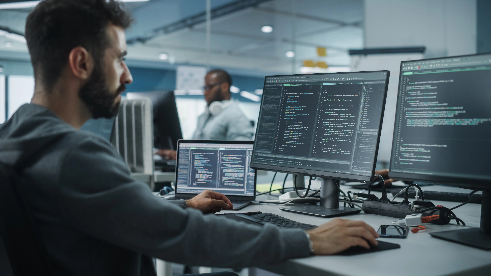

About me
My name is Pavlo and I am 15.
I can say that I am already Intermidiate-Advances in Python, because I place lots of prize places in different competitions about algorithms.
I want to become a software engineer in a Goodle company.

Currently I learning C++ and Web Development for my self-improvement.
Among my hobbies are as well:
- Chess
- Tennis
- Reading
- Learning foreign language
- Learn Math and Physics
Hope my plans will come true!(there is lots of my plans i didn't said)